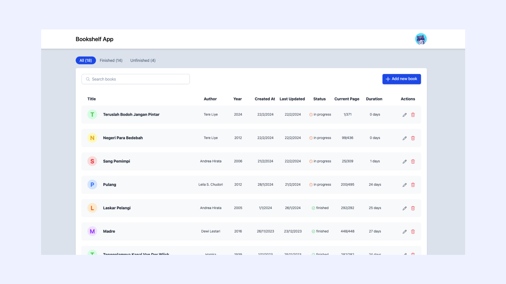
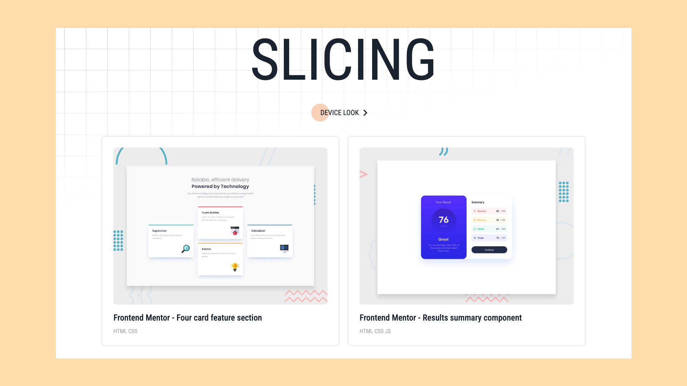

Projects
Practice makes perfect. Here are some personal projects I have completed. This is far from perfect, but I will continue to improve it 🙂
01 Bookshelf App
A simple web app allows users to easily catalog their books and track their reading history by entering details such as title, author, year, and total pages.

Tech
- React
- Redux
- Firebase
- Tailwind
Live Demo
https://bookshelf-app-fn.vercel.app/02 Slicing Project
Slicing design is a must-have skill for frontend developers. This website will collect all the designs I have sliced.

Tech
- HTML
- CSS
- JavaScript
Live Demo
https://learn-slicing-fn.vercel.app/